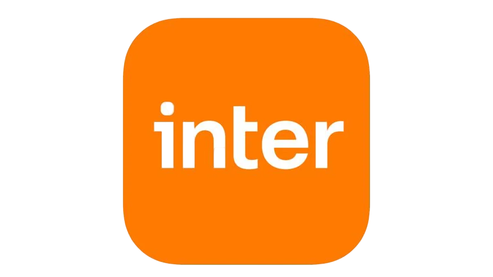
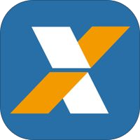
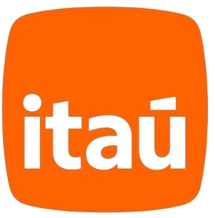
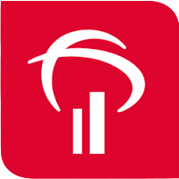
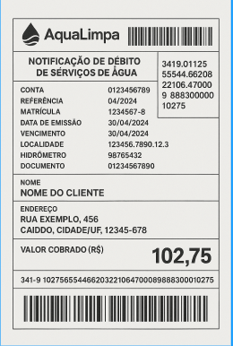

←
Cadastre já sua conta de água no débito automático?
Os benefícios:
Evite atrasos e multas – Pagamento automático no próprio vencimento e créditos automáticos.
Praticidade – Não precisa ir a bancos, lotéricas ou acessar aplicativos para pagar a conta.
Mais segurança – Reduz riscos de fraudes em boletos falsos e evita golpes.
Facilidade no controle financeiro – Débitos programados direto na sua conta.
Contribui com o meio ambiente – Empresas podem deixar tarifas reduzidas para boletos digitais.
Possibilidade de economia – Redução do uso de papel com faturas digitais.
Na prática pela AquaLimpa:
Débito automático no vencimento – Pagamento via conta bancária.
Não se preocupe com boletos vencidos.
Evita o uso de papel – Mais sustentabilidade e contas limpas.
Para cadastrar: Vá até o site/app do seu banco e ative o débito automático.
Em caso de dúvidas, entre em contato via atendimento ou envie uma mensagem para o número da central (WhatsApp).
Para mais informações clique no seu banco abaixo:
   
Exemplo do nosso boleto:
